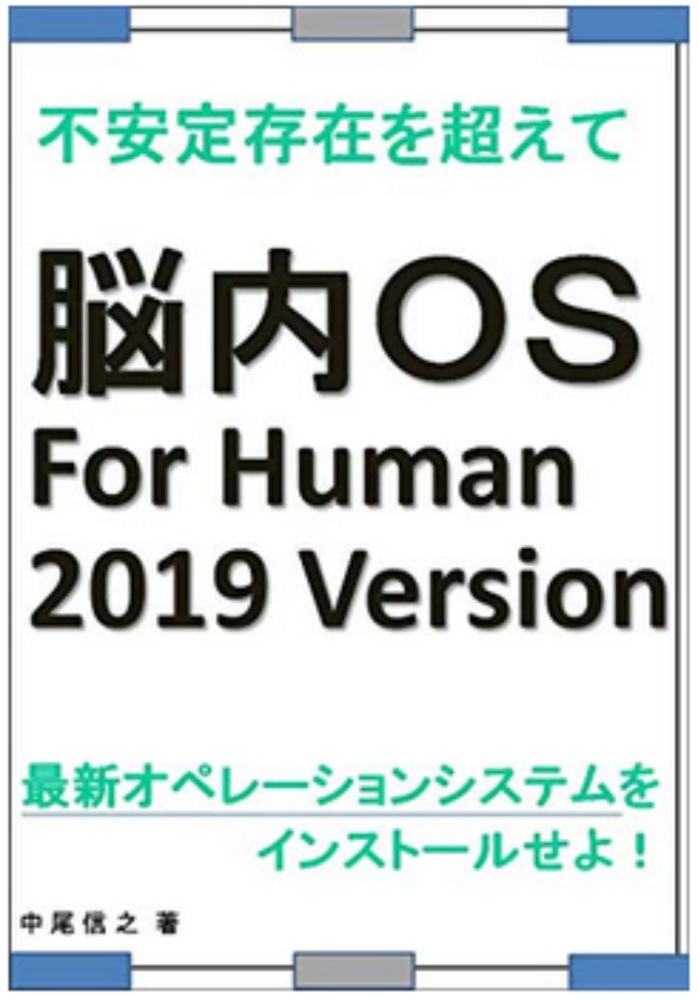
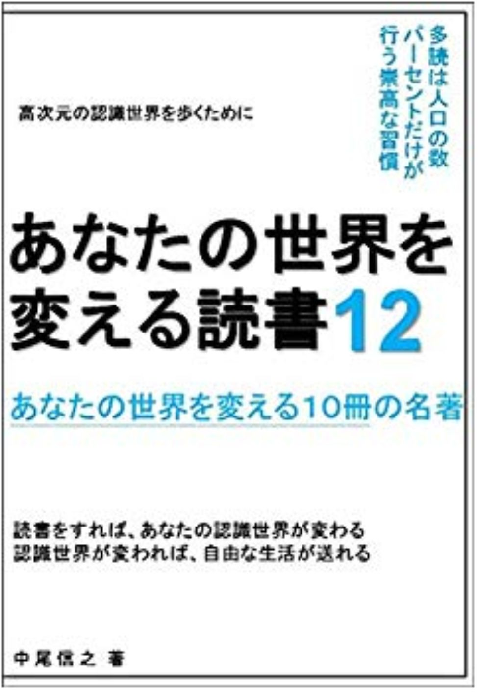
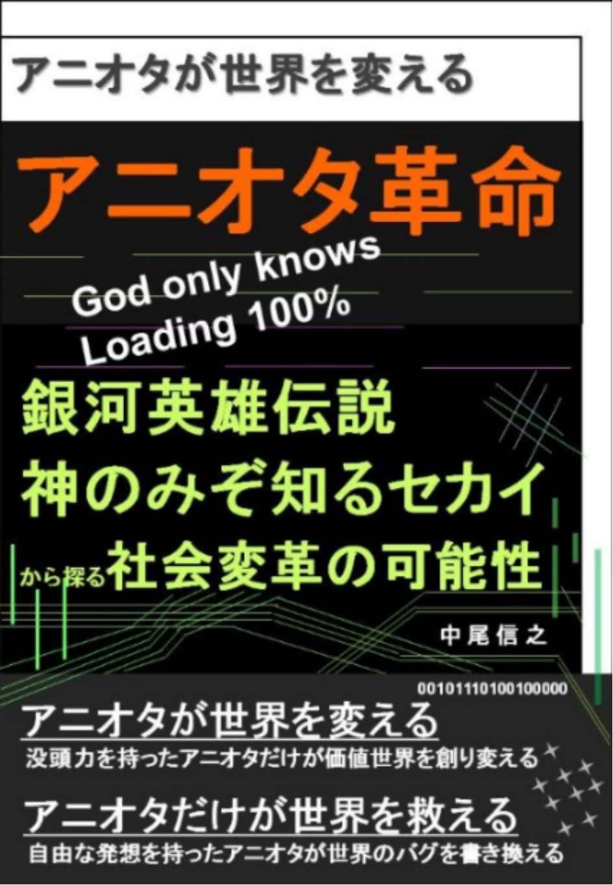
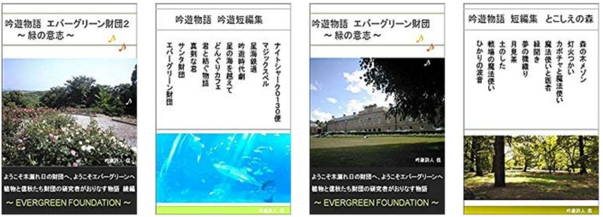

| あなたの世界を変える読書4 あなたの世界を変える１０冊の名著 あなたの世界を変える読書 あなたの世界を変える１０冊の名著 | |
| 中尾信之 | |
| (2018) | |
あなたの世界を変える読書４
あなたの世界を変える１０冊の名著
□はじめに
・日々これ、抽象度を高める旅である
□第一章 生き方のヒントをくれる本
１．仕事したく「ない」人のための働か「ない」働き方 河本真
２．多動力 堀江貴文
３．不動産屋の８割は詐欺師である 滝島一統
４．どこでも誰とでも働ける 尾原和啓
□第二章 世界のとらえ方を変える本
５．ぼくらの仮説が世界をつくる 佐渡島庸平
６．「生」と「死」の取り扱い説明書 苫米地英人
７．苦境を好機にかえる法則 ライアン・ホリデイ
□第三章 科学によって見方を変える本
８．日本人の９割が思い違いをしている問題にあえて白黒つけてみた
武田邦彦
９． 大麻ビジネス最前線 高城剛
１０．無知の 壁 : 「自分」について脳と仏教から考える 養老孟司他
□おわりに
・ 慣性の重力を超えて
□はじめに
・日々これ、抽象度を高める旅である
この本は、キンドルアンリミテッド読み放題対象になっている本の中で、優れた本を紹介するものである。そして、ここで紹介する１０冊の本に書かれている考え方を、ひとつの知識体系として、我々にインストールすることで、自身の世界に対する認識、世界観を書き換え、主体的な世界を創造していけるようにするためのものである。
今回で、本シリーズも４作目となった。２０１８年の３月からキンドル出版を始めて、２冊の英訳版も含めて２７冊をリリースしたが、このシリーズを書くのは、その中でも大きな楽しみのひとつである。蛇足ではあるが、別の楽しみとして、かねてから構想はあったものの、整理がしきれていなかったフィクションの短編物語集も１冊リリースした。（２０１８年末にはペンネーム含めて約４０冊を公開）
素晴らしい本との出会いは、言うまでもなく幸福なものである。しかし、本を開いて数ページを読むまでは、その本が本当に素晴らしい本の兆しがあるかどうかは分からない。表紙やレビューがどれだけ素晴らしくても、本を開いて読み進めているうちに、日本語が綺麗でなかったり、論理展開がなっていなかったりした時には、がっかりすることがある。しかし、最近は、そういう場合も読んでしまった時間はサンクコスト（沈んだコスト）であると考えて、それ以上、深入りせずに、違う本を開くことにしている。
素晴らしい本と出会うと、早く読み進めたい、次に何が書いているのだろうと、どんどんと本をめくっていってしまいたい気持ちがある反面、すぐに読み終わってしまう寂しさもあり、少し複雑な心境である。しかし、やはり面白い本に出会った場合は、すぐに読み終わってしまうのが通例である。キーメッセージのような内容にラインを引いているが、面白い本の場合は、かなり多くのラインを引くことになる。著者が、深い専門性と多くの経験を持っているかどうか。その人独自の鋭い視点と、他の多くの情報を統合できているかなど、読んでみれば、すぐに分かるものである。
巷に出回っている本の中で、同じようなタイトルで、同じようなテーマについて書かれた本でも、優れた著者によって書かれた本は、まったく違う光を放っているものである。その違いを生み出すものが、「抽象度」の高さであると考えられる。同じ事象をみても、平面的なとらえ方しかできない人間と、より高い、より広い視座で事象を見て、その１回の事象に対してではなく、もっと多くの事象の説明ができるような、法則などを見出すことにより、一段、高次元の説明をできる人が抽象度の高い人であると言える。分かりやすい例でいうと、同じような何気ない体験をしても、優れたお笑い芸人の方は、それをとても面白い話として、絶妙の間をとりながら話したり、上手く要約したり、ある部分は、やり取りを細かく説明したりと上手に説明をするはずである。これは、説明が上手いというより、認識の仕方のレベルが違うのであろう。
私たちは通常、繰り返しの日々を生きているが、その中で、日々、少しずつ違った見方をしたり、少しずつより高度な認識能力を持つように心がけたりするということが、本シリーズの主題である。今回は、そのような視点にたち、抽象度を高めてくれる本を集めたということもできると考えている。
抽象度を高めるための自分の世界認識の度合いの検証というものは、１回では終わらず、日々、あらためて、今の見方がベターなのか、別のベターな見方があるのではないかと考えたり、事情が変わって、違う法則が生まれているのではないかというように考えたり、たゆみない検証をしていくことが大切であると思う。
これ、日々、抽象度を高める旅なのである。
ぜひ、その旅を楽しいものにするために、今回もまた私と一緒に１０冊の知識体系を取り込む旅にお付き合いを頂けたらと思っている。
読書によってあなたの世界観がつくられ、
あなたの認識する世界は変えられる。
認識世界が変われば、あなたが変えられる。
そして、豊かな世界を生きられるようになるのである。
私が、本シリーズで紹介した時点では、読み放題対象だった書籍が、その後、読み放題ではなくなっているものも出てきていますが、その点はご容赦を頂きたく思っています。そのような書籍については、私の推薦文を読むことで要点部分をご理解頂くか、興味を持たれた場合は、ご購入頂くか、その作者の他の読み放題書籍を手にとって頂ければと考えています。その点、ご了承頂きたく、よろしくお願いいたします。
□第一章 生き方のヒントをくれる本
１．仕事したく「ない」人のための働か「ない」働き方 河本真
本書のタイトルは、最近ありがちなタイトルである。しかし、そこには、ありふれた書籍とは違う抽象度の高い視点が散りばめられていたと思ったので、今回、本書を最初に紹介することにしたい。
私も、働くということに関しては思うところがあり、初めて電子書籍にしたのは、「自分を生きる天職（転職）のすすめ ～１００％実力を表現する面接法～」という本であった。この中で私は、面接に臨むための認識論や、テクニックについて説明するだけではなく、職業選択や、社会とのかかわり方という点についても記した。
ジャンジャックルソーは、社会契約論において、ひとりひとりが主体的に合意した一般意志に基づいて、社会や国家は形成されると言ったように、現在においてもあらゆる組織は、主体的な個々人の組織との対等な合意の集合によって、形成されていると考えるべきであると私は思っている。このような前提にたった私の働くということのとらえ方、考え方についての論じている部分が、今回紹介する本で少し似ているところがあり、共感できることが多かった。
本書が素晴らしいのは、具体的な細かい行動を提案するのではなく、そういう即効性のあることを売りにする書籍たちを批判するとともに、より抽象度の高い生き方を、考えるきっかけを与えてくれるところにある。
まずは「働くということに対するイメージ」を、ひとりひとりが考えるということの大切さを、説いている。私は、いろいろな縁もあって、８つめの組織に所属することになったが、大学を卒業してから、かなりの期間、組織に所属せず、一般的な労働をしていない期間が多く存在する。最近は、半分ほど働いていないと言っても良い。これは、著者のいう「仕事との距離を置く」という行為であると私は思う。何も働かないことが良いと言っているわけではなく、距離をおいて考える機会を持つことが、より良い働き方や生き方につながる可能性を示唆してくれている。
その他にも、一般的な書籍が勧めていることを、軽率に勧めずに、ひとりひとりにあった行動を取ることが大切であることも指摘している。また、尊敬できるのは、自身の書籍についても、その全てをうのみにするのではなく、この本も含めて、あらゆる本については、自分で考えて理解したり、記載されている内容を善しとするか、しないかも自分で判断をしていくことを推奨している。
まさに、今回、「はじめに」で記載したように、あらゆることを、懐疑するというよりは、自分で見つめ解釈していくことが大切であるということも説かれている。最近、はやりのテーマであるが、少し違ったエッセンスを読み取って頂きたい一冊であると思う。
２．多動力 堀江貴文
第三弾では、堀江さんの「すべての教育は「洗脳」である～２１世紀の脱・学校論～」という本を紹介した。この本で書かれている内容は、機能脳科学者の苫米地英人さんの言っていることと似ている部分も多かった。人の脳や、洗脳ということを専門に研究してきた苫米地さんの認識と、ビジネスのイノベーターである起業家の堀江さんの考えが一致しているということが面白く感じられた。
今回の多動力で、より堀江さんの考えていることがストレートに伝わると思う。１年９カ月にわたって刑務所にいた間でさえ、メールマガジンを休刊せずに続けたことや、基本的に仕事の納期は守っていることなど、テレビで植え付けられた印象とは違い、やっていることは真面目にこなしている方なのである。
前回紹介した本では、「没頭力」という言葉がひとつのキーワードであったが、学校教育がそれを奪っているという指摘がされていた。戦前から続いてきた日本の儒教的な教育が、とうの昔に耐用年数が過ぎているということであると思う。今の日本の教育が、基本的に工場やオフィスで単純作業しかできない平均的なロボットのような人間しか作っていないということである。文部省も、いらないし、教育委員会も、いらない。
「永遠の３歳児たれ」という言葉が今回提唱されていた。私は直近、「勇者ヒロキの大冒険」という本を公開したが、主旨は同じである。３歳になろうとしている、２歳後半の我が子は、素晴らしき没頭力を持って、自分の興味のままに生きている。そして私たちは、それを押しとどめて、自分たちの日常生活の枠を押し付けようとしてしまう。しかし、そうではなくて、子供が３歳前の勇者のままの気持ちでいられるように、私たちが、逆に、そちらに歩み寄ろうということを私は実践したいと思いながら、日々接しているつもりである。３歳児は、やりたいことだけに集中して生きている。
堀江さんも、やりたいことだけをやっているから、それは忙しいのではなく、楽しいことだけをしているということになる。苫米地英人さんのコーチングに関連する本では、自分の人生を生きるには、また成果を出すためには 、 have to ではなく 、 want t o なことだけに専念することが好ましいと書かれている 。 want to なものだけを行うというのは、最初か ら want t o な状態のものだけというわけではなく、自分のとらえ方によって 、 want t o になった行為も含まれると思われる。
そして、堀江さんが言うように、並列的にタスクをいくつもこなしていくうえで大切なことは、ひとつのことを、どれだけ早くやるかということではなく、アウトソースできることはアウトソースする、要は自分がやるべきことに専念すること。そして、やるべきことをリズム良くやることであるという。確かに、リズムが悪く、途中で流れが区切れると、そこから集中するのは難しくなったりする。食事のあと、お皿は、今洗った方がいいか、置いておいた方がいいか、リズムよく対応した方が、後続のことも上手く流れるのだと私も思う。そもそも、堀江さんの場合は、自分がやるべきではないことはアウトソースすべきという判断なので、料理などは自分でやることから除外される。私の場合は、料理をすることも、リズムを作る流れの導入になったりするので、今のところ除外はしていない。
以前、紹介した高城剛さんの本では、ひとつのことに集中するのは、限られた時間にして、次のことを行い、また次のことを行いと、短時間で順繰りに、やることを切り替えていくやり方が、効率が良いと勧められていた。私もこれは正しいやり方であると思う。また、今回、１冊目として紹介した本でも、苫米地さんのいうような「無意識」の使い方について言及がされているが、上述のように、タスクを順繰りでいくつも行っているうちに、先にやったタスクに関する考えが、自分の頭の中でまとまっていく時間をとることができているのではないかと思われる。
「石の上にも３年」、「バカ真面目（完璧主義）」、「バランス教」、そのような固定観念から脱して、自分の楽しめることを、今をワクワクして生きることを真剣にすすめている本である。私も４１歳で、８つの組織に所属したので、「石の上にも３年」と言われたら、「それが絶対」ではないと言いたい。恥をかくことを考えたり、他人の目を気にしすぎたりせず、楽な気持ちで、やりたいことをやり、自分の時間を生きることを、本書を読んで、改めて誓ったしだいである。非常のおすすめの一冊である。
３．不動産屋の８割は詐欺師である 滝島一統
少し表紙の写真のインパクトが強く、中身があるかどうか疑わしかったが、読んでみると文章も読みやすく、内容も理解しやすかった。そして、誰もが気にしているような不動産に関する疑問が、明確に解説されていた。
面白いのは、本書のタイトルからも、業界の暴露本的な印象を受け取れると思うが、この本を出すのは、キンドルしかなかったという記載があって面白い。
たとえば、家は賃貸するのが得か、購入するのが得かという疑問に対しては、賃貸が得であるという。細かい数字の試算をすることで、それを分かりやすく説明してくれている。「購入した方が得です」という不動産屋さんたちが、説明していない項目を金額も入れて説明してくれている。
そもそも購入して３５年ローンをした場合、その場所に３５年住み続けるという想定自体が、かなり無理があり比較自体がナンセンスなことも指摘されている。
仮に３５年住み続けたとしても、子供たちが巣立ったあとの空き部屋を、誰かに民泊のような形で貸し出したりしなければ、物置になってしまうだけなのである。これだけ、移動することが高まった社会では、同じところに３５年住み続ける想定だけでも無理がある。ここで中古物件市場が、上手く回っている社会はいいのだろうけれど、そこが日本では上手くいかないから難しいのである。そもそも多くのローンを組んで購入しているから簡単には売れない状態になっているし、住んだ瞬間に建物は大きく値下がりしてしまっていることが普通だったりするからである。
また現在は、過去のバブル以上のお金が不動産投資にまわっている状況を説明し、明確にバブルであることを指摘している。普通に考えれば、実力以上に値上がりしたものは、それを支えていた状態が崩れた瞬間に、自然収縮するのが当然である。円安という状態が、日本の株や不動産を買わせているのである。実際にそれに、価値があるかどうかは、また別問題である。それでは、人口減少社会で、空家率（平成２５年の東京都は１０．９％）が上昇していく中では、これから値下がりしない方が嘘であると私も思う。実際、普通にみて、本書籍では１０％の値下がりで試算がされている。また、大前研一さんの書籍でも、昔から、東京の日照権などの規制の厳格さの問題点が指摘されていた。規制を緩和すれば、東京でも十分に広い敷地面積を持つことができるのである。また大前さんは、土地の用途に関する規制が緩和されると、さらに住宅地が供給されることになり、これも値下げに影響するというような指摘もされていた。要するに、日本は土地が足りないというよりも、規制によって、上手く市民に安価で安心な住宅が提供されていないということなのだと言える。
既に、３６８万ヘクタールある九州地方より広い４１０万ヘクタールの所有者不明の土地があり、これが数年後には北海道の広さの規模になるという謎の状態も放置されている。都会の老朽化した空家問題とあわせて考えても、住宅の土地も、それ以外の土地も、まだ有効活用されるべき土地は多くありそうだ。これらの空いている土地は、何も大規模農業に使われる余地がなくても、家庭菜園として、細々と利用されれば食のリスク分散にもつながるのである。このことは以前、紹介した自然農法の福岡正信さんの書籍でも主張されている（残念ながら福岡さんの書籍はキンドル読み放題対象のものはない状態です）
マンション投資は最初から赤字になる計算や、海外の不動産に関しては、日本人は売れ残りをつかまされやすい事情なども説明をしてくれている。後半は不動産購入のメリットについてもふれているが、しかし、すぐれた「詐欺師ではない不動産のプロ」と出会わない限りは、得をすることは難しいことが本書を読めば理解できる。そして彼がいうのは、日本で投資していい物件の間口は相当少ないということである。
マンション投資などのように、間違ったものを買わされた場合は、資産ではなく負債なのだということを、きっちり認識する必要があるということが良く分かる。
４．どこでも誰とでも働ける
１２の会社で学んだ"これから"の仕事と転職のルール 尾原和啓
尾原さんの本は、読み放題で数冊でているが、アマゾンキンドルでも、かなり読まれているようである。非常にマイルドな日本語で書かれているので、優しい雰囲気があるが書いている内容は堀江さんの言っていることに近い部分がある。
例えば今回紹介した、堀江さんの本では、ひとつのことをある程度きわめて、１００人にひとりの人間になるとして、その分野を三つ持てば、１００を３回かけて、１万人にひとりの人間になれると言っている。以前の本でも、肩書きを掛け合わせることの重要性が主張されていた。
尾原さんも同じである。そもそも１２社も組織を経験していて、それをサブタイトルにしているくらいだから想像して頂けると思うが、同じ業界の中で、企画職から営業職になることや、同じ職種で、違う業界にうつることを交互に繰り返すことで経験値をあげていけることも紹介されている。
堀江さんが、石の上にも３年とか、ノウハウをきちんと短期間で教えない寿司屋の修行を批判していることに通じる部分がある。ノウハウは、共有してこそ、オープンソースイノベーションの時代には、さらにそのノウハウや情報が高められていく。それを囲って長期間自分のものにしようとする時代は終わったのである。
８社を経験している私にとって、近しい年齢のかたが１２社も経験していることは、驚きであり、そういう方が存在していることで、時代が変わってきていることを実感する。
方法論や考え方については、私が公開している「はじめてのチームマネジメント ワンチーム・ビルダーを目指して」や、「購買本部は本当に必要か スタッフ機能のあるべき姿を求めて」に記した内容に近いことも書かれている。たとえば、性善説で組織を見ることや、期待値のコントロールの手法については、感覚的に分かっていることを超えて、文章として、論理的に理解していることが有益であると考えている。感覚として分かっているだけでは、その方法を人に伝えることができないからである。
成功の再現性を高めたり、成功の拡大再生産を行っていくためには、同じことを一人でやり続けるより、より多くの人が、そのレベルに到達し、同じことができる人を増やしていく必要がある。これは、情報をシェアして、オープンイノベーションを起こすということと同じ考えのように思われる。
□第二章 世界のとらえ方を変える本
５．ぼくらの仮説が世界をつくる
作者の佐渡島さんは「ドラゴン桜」や「宇宙兄弟」を世に送りこんだ編集者の方である。編集者とは、プロデューサーであるべきだということを持論にされているようである。私が感銘を受けたのは、佐渡島さんの世界の認識の仕方である。仮説や定義をする方法によって、世界を自分なりに認識して行こうという考え方が、今までに聞いたことのない表現のように感じられたのである。
実際は、仮設や定義をしなおすということは、今までの自分が社会生活の中で作ってきた考え方の型であるブリーフシステムを、新しい定義で見直すことであると言い換えることもできると思う。佐渡島さんのように、そのような思考をしていない人間は、どんなにいい作品に出会っても、それをヒットさせるところまで持っていくことはできないのではないだろうか。
もちろん佐渡島さんは作品が面白くなるように編集者（プロデューサー）として、漫画家さんに真摯に向き合っている。しかし、それだけではなく、読者の手に届くように、より多くの人に、その作品を見てもらい楽しんでもらえるようにするための工夫にも責任を持っているところが、他の業界人とは異なるところなのだろうと思う。
気になって少し調べてみたところ、「日本出版販売株式会社」という組織のサイトの情報によれば、２００１年に２兆３０００億円を超えていた出版物の推定販売額は、２０１６年には１兆５０００億円強に激減している。出版物の中にはあらゆるものが含まれているので一概には言えないが、紙の出版物の業界の構造自体に問題があることが分かる。その構造の中で、 今までの普通のやり方をしていれば、同じインプット（作品制作や販売努力）に対して、アウトプット（売上げや所得）は６５％になるということである。 あえて、その業界に入るのであれば、そこで今までと違うアプローチをすることが必須であることが分かる。この数字だけ見ても、そのような考え方ができる。それ以上、多くのデータを集めなくても、だいたいこの考えは正しいと推測できる。
だから佐渡島さんは、作品の質を高めることだけではなく、売れる仕組みや売り方について今までとは異なったアプローチをとっている。しかも、そういうことがないと、どれだけ有能な作家でも生活していくことができないのではないだろうか。ここから、私がおおざっぱに試算をしてみることにする。
宇宙兄弟は現在のところ、累計２０００万部の販売実績があるという、仮に５４０円で計算すると、書籍だけの売上は１０８億円になる。そのうち、作家の取り分が１０％であると、１．０８億円になる。
さて、ここで別に試算として、仮に１０万部の実績が奇跡的にあったとして、同じく５４０円単価だった場合に、売り上げは５４００万円である。ここに同じ率の取り分１０％を想定すると、５４０万円になる。これは１年間の数字ではなく数年として考えた場合、宇宙兄弟の方は、きちんと生活ができるが、数年で５４０万円の場合、一般の世帯年収の１年分強程度を、数年で稼いだことになる。しかも、仮に１０万部も売れたという仮定をしても、このレベルなのである。
ここに佐渡島さんのような優れたプロデューサーの存在意義がある。以前、「新風舎」という詐欺まがいの出版会社が２００８年に破綻して問題になった。自費出版を歌い文句にして、出版会社はリスクを負わず、出版の費用を作家に全て押し付けて、販売は努力せず適当にしてお茶を濁す。このようなやり方で、新風舎は、出版書籍数が一位であることを売りにしていたのである。
これは適当に書いているのではなく、若いころの私も詩集の出版を持ち掛けられたため話を聞きにいったことがあり、ここに記載したことは実体験を含んでいる。普通に考えれば、振り込め詐欺のような話であるので、ビジネス経験のある人なら、新風舎が提示している費用負担はおかしいと分かるし、販売戦略がないことも分かる。しかし、若くて夢追いだけをしている人や、年をとられてとりあえず本を出したい人などは、だまされてしまうのだろう。しかし、これは笑えない話である。不動産の本を紹介したが、不動産屋の８割は詐欺であるという著者は、その酷さの程度は振り込み詐欺よりも酷いというのだから、だれしも注意が必要である。
さて、出版業界に話を戻すと私が、佐渡島さんの本を読んでから気がついたのは、新風舎は明らかな詐欺に近いことを（配布店舗数などに詐術を用いていたと言われるので、詐欺罪の構成要件に該当する。また仮に詐術を用いていなくても、契約のリスクを正確に伝えずに、一方的に不利益を押し付けるのは信義則に反している）していたが、そこまで酷くない場合でも、佐渡島さんのように、本当の編集者、本当のプロデューサーとしての売り仕組みの創造や、新しい売り方の創造をしていない人たちは、新風舎と変わらないのではないかということである。
たとえば、作家の時間を不必要に何カ月もの間、ミーティングで何度も消費させることで、必要以上に作品に口をはさみ、作品の質を変えさえておいて、販売努力を、まったくせず、ほとんど売れなかったとする。その場合、作品を変えずに、さっと販売していた方が、結果が同じく、ほとんど売れなくても効率が良い。
これを言い換えると、作家が生活をできる売り上げをあげるまでは届かないが、出版社の営業と編集者は、ほぼ無駄な活動しかしていないのに、彼らの生活費だけをまかなう程度の売上にとどまっているケースが多いのではないかということである。例えば、公務員が市民のために存在しているのではなく、公務員のために存在しているケースも少なからずあることと同じである。
そうなってくると作家は、どうせ大きく売れないのであれば、取り分７０％で、時間をかけずに、すぐに出版できるアマゾンキンドルで出版するという選択肢を、今の時代は選べることになるのである。しかし、逆に、佐渡島さんのような最高のプロデューサー、編集者が関わってくれるのであれば、１０％の取り分でも、売り上げ母数を大きくあげてくれるのだから、才能がある人は、そちらの選択肢を取る方が、派生商品の売上も含めて大きなリターンになると言えるのではないだろうか。
私は漫画が嫌いではないが、漫画に出会う間口が今、まったくないため、久しく漫画を読んでいなかった。しかし、佐渡島さんの本を読んでから、佐渡島さんが関わった「インベスターＺ」がキンドルで読み放題になっていたので１巻から１０巻まで読んでみた。確かに面白い作品であった。漫画であるので、今回の１０冊の中には盛り込まないが、ぜひあわせて読んでもらいたい作品である。今は、読み放題にはなっていないが、定期的に読み放題にされているのかもしれない。
日本出版販売株式会社のサイト
https://www.nippan.co.jp/recruit/publishing_industry/current_status.html
６．「生」と「死」の取り扱い説明書 苫米地英人
このシリーズでは、既に苫米地さんの書籍を４冊紹介している。シリーズ第一弾では、「超瞑想法」を、第二弾では、「２０１冊目で私が一番伝えたかったこと」と「日本サイバー防衛＆国防白書」を、第三弾では、「宗教の秘密」を紹介してきた。今回の、「「生」と「死」の取り扱い説明書」で５冊目となる。それらは、全て私たちが生きていくうえで、重要なテーマについて書かれた本であり、固定観念をひるがえしてくれるような内容のものが多い。
生と死について考えることは、人類がずっと続けてきたことである。死ぬということを怖いと思い、不安に思う。そのような心の隙間に宗教は助けになったり、逆にそこにつけこんで恐怖による支配をしいてきたりしている。日本の現在の仏教も葬式仏教と揶揄されるように死んだ後に行う葬式を主業務にして成り立っている。ところが、苫米地さんによれば、仏教の開祖とされる釈迦は死後の世界については、「無記」として語っていないのだという。また葬式には近づくなと言ったということである。
釈迦は日本の仏教では当たり前のことである生まれ変わりを、バラモン教の身分制度に繋がる思想であるために明確に否定しているというのである。宗教にとって、生まれ変わりの論理というのは非常の魅力的で利用やすいが、釈迦はそのようなもので、人を惑わすような考えを持っていなかったというのである。
日本の仏教はいろいろな変遷を経て、中国の儒教や、道教の考えが混じり、日本の浄土教が混じり、日本独自の文化と混じり、釈迦の教えからは大きく遠ざかっている。また、前回紹介した、「宗教の秘密」では、キリストの教えも、その後の解釈で、キリストの考えから大きく遠ざかっていることを指摘している。キリストは神の無条件の愛をとなえ契約の必要性をうたっていなかったのに対して、その後のキリスト教は神（教会の権威）との契約、つまり信じるものしか救わないという論理になっているという。
このような根本的な宗教のもともとの開祖の考えを知り、そして物理的に、生物としての人間の死の定義の難しさを知ることで、生きるという行為を改めて見つめなおすことができる。人間は、多くの細胞の集合体であるので、定義上、死を定義することが難しいという。そして、釈迦が「不生不滅」という言葉で表したように、私たちは死によって物理的に存在がなくなっても、私たちの生きた情報は、どこかに存在し、また質量保存の法則のように、私たちの物質も何かに変わって存在しているということなのである。いずれにしても、人間にとっては、私たちが生きている「今」という時間しか、実際は存在していないことが、とても重要であると言える。
７．苦境を好機にかえる法則 ライアン・ホリデイ
本書は、「苦境を好機にかえた」多くの事例を紹介している。そのため、それぞれの事例について書かれている著書の解説に一貫性がないように思われたり、著書が、それぞれのケースを包含した高い抽象度で、本書をまとめあげているかと疑問に思える点もある。
そして、まずもって、海外の本にありがちな、本文に入る前に、本書をたたえる数々のコメントがあるところが、よろしくない。まるで、「アメリカで大ヒット上映中、よって日本人も当然見てくださいね、この映画」のような始まり方が、さすがマーケッティングをしている人間というような感じがある。
多くの事例を取り上げているので、私たちは、そのひとつひとつに納得をする必要はない。それらの中で、私たちが気に入ったもののいくつかを、自分の環境を認識する際に、利用すればいいのだと私は思う。だから、上述のように本書の苦手な部分があるにしても、私たちが、吸収できる事例が、いくらかあると思えたので、ここで取り上げることにした。
事例が多すぎて、読まなくてよい事例も多くある。ピンとこないものは、どんどん読み飛ばすべき本であると思う。いくつか気にいったのは、戦（いくさ）に関する事例である。ワシントンは逃げるのが得意だったということや、歴史家が戦争を分析したところ、真正面からぶつかったものは６％しかなかったということなどが、それである。銀河英雄伝説に登場する魔術師ヤンは、学生時代に戦術シュミレーションで学年一位のワイドボーンという秀才を破った。その方法は、真っ向から対戦するのではなく、攻められると有利な場所で守り、そして相手の補給部隊の側面をついて補給線を絶ったのである。「戦は兵站（へいたん）にあり」と言われる理由がここにある。
戦をするには、武器や人員や、食料の輸送が必要になる。ところが、そういう裏方がしっかりしていないと戦自体が成り立たないということである。戦の勝敗は戦の前に定まっているという論理の根拠もここにある。宮本武蔵の五輪書にもあるように、戦において、気が張っている者同士が、真正面からぶつかることをさけて、違うぶつかり方をする方が賢いと説いているのと同じである。
逆境においても、あらゆる要素をとらえなおし、柔軟に考える、わき道を考える、何もしないという決断をして好機をさぐるなど、まったく違うアプローチをとってみるということができるのである。
マルクス・アウレリウス・アントニウスが何度か紹介されているが、この事例は私には、まったくピンとこない事例である。単に苦境を悲しいと捉えるなというだけでは、方法論としては、暑いと感じるなと言っているのと同じであると思われるからである。
そもそも、私たちは、このシリーズ「あなたの世界を変える読書 あなたの世界を変える１０冊の名著」の第一弾で、私たちが個々人の世界（認識宇宙）の主役であるだけではなく創造主であることを既に気づいているのである。
たまたま置かれている状況、環境のとらえ方を変えるレベルは、とっくに飛び越えて、認識世界そのものを作っていく思考力を私たちの手にしているのである。そういう高次元の認識にたった私たちにとって、好ましい事例にだけ耳を傾けていけば十分である。
□第三章 科学によって見方を変える本
８．日本人の９割が思い違いをしている問題にあえて白黒つけてみた
武田邦彦
シリーズ第三弾で初めて武田先生の本を紹介した。私にとっても武田先生の本との出会いは良き出会いであった。不思議に思うのだが、有名な方でも、本を出している数が意外に少ない方が多い。そしてまた、キンドル読み放題に設定している本を出している方は、さらに少ない。そう考えると、読み放題の本を多く出されている武田先生は、多くの方に、メッセージを伝えようとされているのが分かる。表紙の感じからも、自分で出版されたように思える書籍がいくつかある。
前回紹介した本で、衝撃だったのは現状においてゴミの分別が、ほとんど意味がないどころか、燃焼効率や運搬効率から考えて逆に環境に負荷をかけてしまっているとうことであったが、今回の本は、環境問題だけではなく、少子高齢化や、電力需給に関する問題など多くの問題についての科学的な考え方を教えてくれている。
面白いのは少子高齢化についての考えである。私も言われて見て納得したのは、人口ピラミッドが、ピラミッドのように三角形になっているのが望ましいということが言われているが、それは無理な話であるということだ。三角形をしているということは、人生の半分くらいになった時に、多くの仲間が、半分以上既に死んでいるという社会である。これは多産多死の社会である。そのような簡単に死んでしまう社会が良いわけではないのである。
逆に、三角形にするためには別に多くの人間が若くして死ぬことを前提にしていないと言われるのであれば、必要となる子供の数が常時増え続けるという、これまたありえない設定になるのである。少子高齢化、人口減少ということについて、不安をあおる人々のメッセージに耳を傾ける必要はあまりないのである。人口が減るということは、国力の勢いが減るかもしれないが、増えすぎていたのがおかしいのであって、適正化されるのは良いことであるという意見もある。だいたい地球全体で見たら、まだまだ人口は増えているのだから、減っているところがあることはバランスを取る意味でも必要である。
また電力の問題についての指摘も分かりやすい。私も学生時代に何度もおかしいと思っていたことがある。それは、 全国にある原子力発電所が、頻繁に事故でストップしているということである。 東北地震とその後の津波による原子力発電所の被害を「想定外」という言葉で逃げた国と電力会社であるが、彼らは単なる嘘つきだということであるらしい。
実は、毎年のように震度６で安全性が壊れるということは、想定内の地震で壊れるということなのだという。なぜなら震度６は一年に１度起こる地震だからである。
東北自身の際に、たまたま大きな被害がでた福島だけが問題にされているが、実は、冷却ができないような電力供給が止まる事象は、千葉と青森でも発生しており、この状況が問題視されなかったこと自体が我々の認識の甘いところなのである。安全を確保している、安全を検証しているのではなく、たまたまの結果論だけで、震災後でさえも、議論をしているのである。事実のとらえ方自体が甘いのである。それでは、ジャーナリズムは何も機能していないということになるのではないだろうか。
建物や原子炉が甚大な被害を受けたら危険なのではなく、冷却装置に電力が供給されないことだけで危険なのであり、そういう事態が起こることを防ぐための多重の防御設計がされていないことが、根本的な問題なのだと言う。そして、そういうことを事前に、武田さんに指摘されても、改めようとしなかったことが問題である。一言でいえば、体制や、考え方自体が、ズサンということだ。このような状態であるにも関わらず、大前研一さんは、原子力についての考えは改めそうになく、相変わらず自分のことは自己否定ができない方なのだなあと、震災後の書籍でも思わされた。それ以外の国の批判は歯切れが良いのだが。
武田先生は原子力に関する委員会などで、安全性や、住民の避難対策などきちんとリスクを批判してきたにも関わらず、まったく取り合って貰えなかったため、そのような委員会からは距離をとられたという。
みなさん、今のリサイクル技術では、リサイクルするほど環境に負荷がかかるので、燃焼効率を考えてもプラスチック類は、燃えるごみに適度にまぜて出してください。
そうはいっても、燃えるごみの日にだすゴミの量が多くなるので、これまた不便なことである。一度、ペットボトル回収日や、プラスチックゴミ回収日を設けてしまうと、それにあわせた無駄な物流網や業界が構築され固定化されてしまうのである。本当は、質の高い焼却炉ができた後は、燃えるごみの回収日を増やして、プラスチックごみの回収を、いろいろな業者に分割して依頼する必要はないのだろうに。
適度に分別しすぎないで、燃焼効率をあげましょう。
９． 大麻ビジネス最前線 高城剛
この本は高城さんのキンドル読み放題対象の本の中では一番ボリュームがある書籍であった。当初、ここで取り上げるつもりはなかったのであるが、今年の国民健康保険の請求が着て、やはり医療保険、介護保険制度のバカ高さに嫌気がさした時に、思い出したのが、この高城さんの書籍である。
もともと戦後までは、大麻は違法ではなく利用されていたということである。それが、製薬会社の薬をアメリカが買わせたいがために、大麻を禁止してしまったというのである。そう言われてみると、非常に納得してしまう。自然にあるもので心身が健康になるのであれば、薬はなんなのだろうということになってしまう。大麻自体も、いろいろな種類があって、その種類によって、薬効や人体への影響が違うという。
効かない抗がん剤よりも、ガンに効く大麻の種類もあるのであれば、医療用大麻の利用については、医師免許がある人の処方であれば問題がないように私にも思える。大切なのは病気が本当に治るかどうかということであって、製薬会社がもうかることや、医療業界がもうかることではないのである。それによって、公的な医療保険の規模が小さくなることも、市民にとっては、まったく問題がない。とはいえ、相変わらず医者に必要以上に頼りたい人や、治らなくても、病気でいることを無意識で受け入れている人は少なからずいるので、医療と、医療費、医療保険の問題は簡単には治りそうもない。
１月に家族全員で１回、お医者さんに行くかいかないかで、どうして、あんなに法外な健康保険費用が請求されるのだろうか。会社に所属している人は、勝手にひかれているので、引かれる総額が大きいと思っても、どの部分が医療保険の部分か意識していないかもしれないが、会社を辞めた時に、このことは非常に実感する点である。保険がなくて、全額自費負担しても、毎月、何万円も損をしている状態になる。これは他の人を支えていると言えば、聞こえはいいかもしれないが、他の人も、薬漬け、医療漬け、寝たきりづけにされているのだから、一概に人のためになっているとは思えないところが、つらいところである。前述のように人口ピラミッドと厚生労働省やお役所が、三角形に近づけたいのであれば、高齢者への過度な治療や、それを支える新たな保険負担をやめて、自然な死の在り方というものを、もう少し受け入れていくべきではないかと思う。
少なくとも、共産党が言うように、国民健康保険は、保険ではなく、税金であると明言してほしい。少なくとも、国民健康保険も、国民負担率の数字には入るのであるから。
所得が減ると住民税は相応に減額されて請求されているのに、国民健康保険は、その減額率が低く、あまり減額されない。おかしなことになっている。ほとんど医療費を使わない私にとって、不思議で仕方がないことである。
そして財務省数値でも、平成３０年の国民負担率は４２．５パーセント、潜在的国民負担率は４８．７パーセントと、既に高負担と言えるレベルに到達しているのである。かつ、そこから再配分される率がなく、行政コストに利用される率が高いため、歩留まりが悪いのが日本の特徴であると指摘する専門家もいるようである。
医療用大麻だけに限らず、以前も紹介したように、まずは１日２食にして、食べ過ぎないことで健康になりましょう。そうして、医者に頼りすぎることは辞めましょう。
１０．無知の壁 「自分」について脳と仏教から考える 養老孟司他
もともと私は自然と人間の在り方や、環境問題に興味があったので、その分野の本も継続的に探しては手にしているが、なかなか、これはという本に出会えていない。今回も、里山の自然と人の関係の仕方や、その環境が本当に良いのかということについて書かれた本などにも巡り合った。
極論をすれば、人間がいなくても地球は成り立つし、むしろ人間がいなかった間の歴史の方が長いわけである。だから、人間が作った里山という環境が、人間の存在を前提としても最高の環境であるかどうかということは、ひとつ検討するに値する問題であると言える。里山という状態が必要だったのは、それが必要な生活状態があり、それがある種の必然で生まれたものなのであろう。そして、そのような里山があれば、ウサギが住んでいたから、「ウサギ追いし」で始まる、「ふるさと」の歌ができたわけである。だからウサギがいなくなった状態が悪い状態かというと、簡単には判断できないと言えそうである。私は高校生の頃、ＷＷＦという環境保護団体の会員になったが、現在の環境で生きていけない、または、種を保つために必要な個体数が足りない種を無理やり保つことが、絶対的な善かという問題も、また簡単には判断できない問題であると思う。
武田先生などは、トキなどいなくなっても良いというし、もしそれがダメだというなら、大いなる覚悟をもって、限定的な個体を守るのではなく、広大な土地の環境を整備保全するという覚悟と意志が必要になるということである。
欧州を基盤にした自然保護団体なども、今思うとエコ商売の片棒を担いでいることが多いように思える。日本でもトヨタがＷＷＦに協賛しているし、私が高校生の頃は、ボルボが協賛していた。自動車に乗らずに公共交通機関を利用する方が、本当のエコなのであるが、自然保護活動も自動車業界などが宣伝の手段という側面が強そうである。ちなみにＷＷＦのサイトを確認したところ、現在の代表である会長は徳川家の１８代当主になっている。昔は皇族を名誉総代のような地位に頂いていた。結局、オリンピックも宮家が代表になるように、かつての家柄がいまだに幅を利かせているのである。能力主義、成果主義の時代に、私たちが、そのような過去の権威にすがること自体、なかなか私たちの精神が進歩できていないことの証であるのかもしれない。
環境問題に関する良本に巡り合えなかったことから、今回、ここでは、今まで科学に関する本で選んできた本と毛色の違ったものを選ぶことにした。しかし、まさに常識の壁を越えて生きるという意味においては、「バカの壁」という本を書かれている養老さんの参加した対談が本になったものであるので、最適であると思われたのである。
対談形式ではあるが、養老さんの発言をメインに読んで頂けたらと考えている。対談相手の発言は、基本的に釈迦の教えであり、その考えは、既に紹介してきた苫米地英人さんの本で、我々はおおむね理解してきているからである。釈迦がこう言いました。釈迦の考えはこうですというのではなく、その解釈において、新しい見方が加わったものを知ることの方が、有意義であるように思われる。
養老さんの指摘で面白かったのは、ある海外の脳科学者が脳の病気になり、認識能力に異常をきたしたというのである。その時、その科学者は自分と世界の間を隔てるものがなくなり、自分が水のようになる感覚を持ったという。そしてその時は、日常生活に支障が出たものの、感覚としては幸福感を感じることができていたというのである。この事象を聞いて、私は、はっと、することがあった。それは、次のページにあるイメージ図を見て頂きながら説明をしたいと思う。これは、私が「あなたの世界を変える読書 あなたの世界を変える１０冊の名著」の第一弾で紹介した本の理解を深めるために用意した図式である。

１は、自分と世界が隔離されていて、自分が世界を観察する立場である時。
２は、世界の中を構成する要素として自分が存在している場合。世界は自分が構成しており、世界に自分は働きかけられる関係である。
３は、認識している世界そのものを創造しているのは自分であり、自分が主役であり、創造主であるという認識世界の場合である。
この三つのとらえ方については、ここでは詳しく述べないため、シリーズ第一弾などを参照して頂きたい。
上述した脳科学者の言葉いうと、それは２の状態で、自分の円の壁が溶けて、世界と一体化した状態であるか、もしくは、３の状態で世界の円の壁が溶けて、世界と自分が一体化した状態と同じ現象が、意図的に認識の仕方を変えることではなく、脳の病気によって起こったということである。つまり、よりよく生きるための方法論として、私たちが考えてきたことが、脳の状態が変われば、自動的に発生していたということなのである。
また養老さんによると、同じような病気の状態にならずとも、脳の働かせ方によっては、普通の人と違う世界の見方が可能になり、そのことによって素晴らしい芸術作品を生み出すことがあるという。養老さんは、ピカソの例を挙げて、これを「機能のコントロール」や「意識のコントロール」という言葉を用いて表現されている。そして、対談者からは、これが仏教の修行や瞑想の技法による効果や、科学者や芸術家が到達している感覚であるのではないかということが、ほのめかされている。
視点を変えるということでは、養老さんは、虫を追い続けているだけではなく、医学にも関わっていたことから、人体の解剖などもされており、その経験から、死というものを独自の見方で確認され、その恐怖を克服されている。
他にも面白いのは、虫の視点で世界を見てみるということである。一般の日常生活を続けていると常識の壁（バカの壁）に捕らわれてしまいがちになる。そこを、壁を越えて、または違う視点で見てみると、私たちも、もっと違った生き方ができるのではないかと思う。後半では、経済成長一辺倒、石油エネルギー一辺倒で、暑い夏に甲子園を皆が同じように見ることのおかしさも指摘されている。本書では、明確には記載されていないが、後半のメッセージなどは、「お金教」というバカの壁に対する指摘であると私には思えた。
□おわりに
・慣性の重力を超えて
私は２０１７年の１０月から、２０１８年の６月末まで、組織の仕事をせずに完全に自分の生活を生きてきた。他の本にも書いてきたが、それまでも、仕事と仕事の間には、かなりの空白期間を置いている変わり者である。今回の休みの間に、もっとも大切にしてきたのは、２歳８カ月になる長男との時間である。そして、また長男に加えて、私の世界に加わった０歳である赤ちゃんが、私の世界の大きな位置をしめることになった。
社会や大人の一般的なノーム（常識）にそまっていない、このふたりの人間の行動形態や思考形態を観察することが、時間の大半をしめるようになった。自分が子供の頃、どのような存在であったのか、私は子供たちを見ることで思い出そうと試みてきた。そして、多くの書籍の海を泳ぎ、自分の思考に必要となるものを探し求めてきた。そのうち、多くの方々と共有したいと思えた書籍を、このシリーズで紹介してきたのである。
俗事というより、日常生活や常識というものは、大きな思考的な慣性の力を持っている。満員電車に乗ることが、当然の生活をしている人には、満員電車が当然の社会的な存在である。ところが、そこから少し離れたところから、それを見ると、それは当然のものでも、普通のものでもない、異常な光景のように見えるはずである。養老さんが、虫取り旅から帰ってきて、満員電車を見た時も、そのような感覚であると書かれていた。
動物実験でも、あまりに密度が高いと、密度効果によるストレスで異常をきたす動物がいるということを、若いころに、立花隆さんの本で読んだ記憶がある。東京の満員電車の状態は、どこかの国の方々が電車に大勢、乗り込んで行き、はみ出るくらい乗り込んだ状態で電車が走っているのをテレビで見て、私たちが「異常だなあ」と他人事で思っているのと、それほど変わらないレベルなのではないだろうか。
今のこの状態で、人口が減ることが問題だと言ってみたり、このような状態を放置しておいて、環境には良くない偽物のエコ活動をするようなおかしなことを継続する「強い慣性」が働いているように思われる。「働き方改革」や「時差ビズ」という言葉は胡散臭い香りがプンプンする。共産党が「働かせ改革」と揶揄しているのも、なかなか、上手い言い回しであるように思える。時差ビズも、奴隷のように働くことを美徳とする文化や、実際に富が、どこかに流れていく構造そのものを変えなければ、欧州人や豪州人のようなゆとりを持った生活はできないのではないだろうか。
ちなみに乗車率は、最高で２００％近くあると言われ、これを１５０％にさげるとしても、そのような程度で時差ビズに意味があると言えるだろうか。そもそも車両ごとに定員数というものがバラバラに設定されており、計測方法も不確かであるという。料金を払っているのに、着席を前提とせず、定員数を増やすために椅子を減らすという始末である。
要するにサービスは低下しているのだ。サービスが低下していながら、料金は値上げ傾向である。安全のための投資が必要だからという理由である。しかし、電車は公共サービスであり、参入には監督官庁の認可がいるから寡占産業である。公共利益の寡占的に占有しているから、値段はサービスに合った値段や、公益価格にされるべきなのである。国民の税金によってインフラ投資が行われた土台に運営がされているともいえる。ほとんどの人が椅子にも座れないことが前提であれば、それは人の輸送ではなく、貨物輸送と同等扱いであり、貨物よりも積載率が高いなら、価格は極端に下げられてしかるべきなのである。
日常の世界を、日常の眼鏡だけで見ていると、なにが異常で、なにが異常ではないか、自分は何が好きで、何が嫌いか、そして何をしたいか、どうやって時間を過ごしたいかということなどを考える余裕がないことが普通となる。そのような「慣性」が心にも行動にも働いているのではないだろうか。
そこで私たちが思い出すべきなのが、このシリーズ第一弾で、自らにインストールした考え方である。
それは、「私たちは、自分の人生の創造主」であるということである。
どのような状態にあっても、その状態の内側から、あたふたとするのではなく、その状態が、自分の認識している世界全体を揺るがすほどの大きな事態かどうか、創造主として冷静に見つめなおしてみるのである。何か大きな事象があった時や、課題が見つかった時だけではなく、何気なく駅までの道のりを歩いている時に、「自分が創造主」である、自分の世界を今、自分が歩いているということを、もう一度、意識にあげ、再確認しながら歩いてみるのである。
そうすると、今、目の前にある、あらゆる事象が、自分の世界全体を揺るがすほどのことではないことが分かる。そして、多くのことが創造主としてコントロール可能なことだと気づくことができるはずである。この時、私たちは、日常生活の、そして常識の強い慣性（壁）から、自分たちの意志を持って、自由軌道に旅立つことができるのだ。そうした時に、私たちが選ぶ選択肢こそ、自分の意志を持って選んだ選択ということができるのだと思われる。
私たちは、自分の意志で、多くの素晴らしい書籍を手に取り、そして自分の武器としてインストールをしてきた。ここまでで、４０冊もの多くの思考にふれ、そして、そこにある考えを、自分の知的ネットワークの中に取り込んできたのである。これらは私たちの体が、６０兆の細胞でできていながら、統一的な活動をすることができているように、いずれ、知のネットワーク、脳のネットワークとなってつながり、大きな力をなるであろう。
私たちは、主体的な意志をもった創造主として、そして多くの思考を集めた高次元の統一体として、自由な軌道を歩むことができるのである。これからも、私たちの知の旅路は続いていくのである。
次回は、第五弾でお会いできますように。
本書を手にして頂き、本当にありがとうございました。
中尾信之
□作品紹介

脳内ＯＳ ＦＯＲ ＨＵＭＡＮ ２０１９ ＶＥＲＳＩＯＮ
最新オペレーションシステムをインストールせよ！
https://www.amazon.co.jp/dp/B07N1T1TZF

自分を生きる天職（転職）のすすめ ～１００％実力を表現する面接法～
http://www.amazon.co.jp/dp/B07BD3K67Z

はじめてのチームマネジメント ワンチーム・ビルダーを目指して
https://www.amazon.co.jp/dp/ B07BJ98FTT

購買本部は本当に必要か スタッフ機能のあるべき姿を求めて
https://www.amazon.co.jp/dp/ B07BQ9BFDS

あなたの世界を変える読書 あなたの世界を変える１０冊の名著
https://www.amazon.co.jp/dp/ B07BT28HLV

あなたの世界を変える読書１２ あなたの世界を変える１０冊の名著
https://www.amazon.co.jp/dp/B07PS8263Z

アニオタ革命 アニオタが世界を変える 銀河英雄伝説 神のみぞ知るセカイ から探る社会変革の可能性
https://www.amazon.co.jp/dp/B07CRQ3WWD

屋内植物園計画 小さなスペースで緑を楽しむ魔法
https://www.amazon.co.jp/dp/B07CWRK2CN

在庫管理の正解 在庫管理は、こんなに簡単だった
https://www.amazon.co.jp/dp/ B07GFS2YDN

新宿御苑の四季 写真集
Four seasons of Shinjuku Gyoen National Garden
https://www.amazon.co.jp/dp/ B07N83G4L5

吟遊物語集 吟遊詩人信